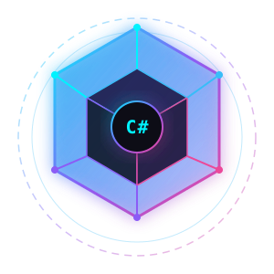
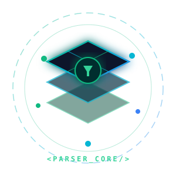
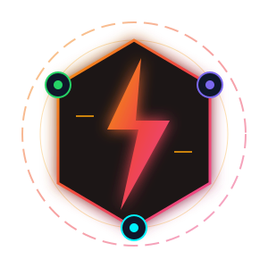
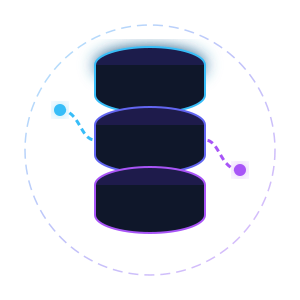
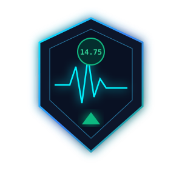
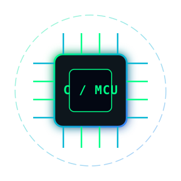

Matheus Alves
Backend C# & .NET Engineer
Desenvolvedor focado no ecossistema C# (.NET 8), arquitetura de microsserviços, mensageria com RabbitMQ, modelagem relacional com PostgreSQL e diagnóstico de causa raiz (RCA) para incidentes de alta complexidade. Criador do Meppo e do DataClean.
Transformando gargalos operacionais em microsserviços escaláveis, pipelines resilientes e automações inteligentes.
Com experiência em investigação de causa raiz (RCA) na esteira de produção e construção de ferramentas de alto rendimento, uno fundamentos de Ciência da Computação a práticas modernas de engenharia de software em C#/.NET.

01 / ARQUITETURA & ECOSSISTEMACore .NET Engine
Desenvolvimento de APIs e microsserviços em C# 12 e .NET 8 estruturados em Clean Architecture, CQRS, Repository Pattern, PostgreSQL, RabbitMQ e Docker.

02 / CASO DE PRODUÇÃODataClean Suite
Engine .NET 8 para parsing multi-formato (XLSX, XLS OLE2, XML 2003, CSV), scoring de cabeçalhos por densidade de texto e validação estrita de contratos de domínio.

03 / PRODUTIVIDADE & IMPACTOMeppo Suite
Suíte de produtividade que reduziu tempos operacionais de 6 minutos para meros segundos via orquestração de APIs REST com ClickUp e WhatsApp Web.

04 / PIPELINES & ETLData Ingestion
Arquitetura de ingestão resiliente com tratamento de concorrência, filas assíncronas, normalização relacional e suporte a batches massivos de dados.

05 / SUSTENTAÇÃO & QUALIDADERCA Diagnostics
Diagnóstico em código de causa raiz para incidentes críticos de produção. Experiência profunda consolidada em atuação N1 (5x Top 1), N2 e Engenharia C#.

06 / FUNDAMENTOS & HARDWARESystems & IoT
Sólida base em Linguagem C, microcontroladores (Arduino/RP2040 Pico), protocolos seriais (UART, I2C, SPI) e fundamentos formais de Ciência da Computação na PUC-GO (CR 8.6).
Pronto para elevar o nível da sua engenharia de software?
Disponível para projetos desafiadores em C#/.NET, arquitetura de microsserviços, mensageria e automação de processos.